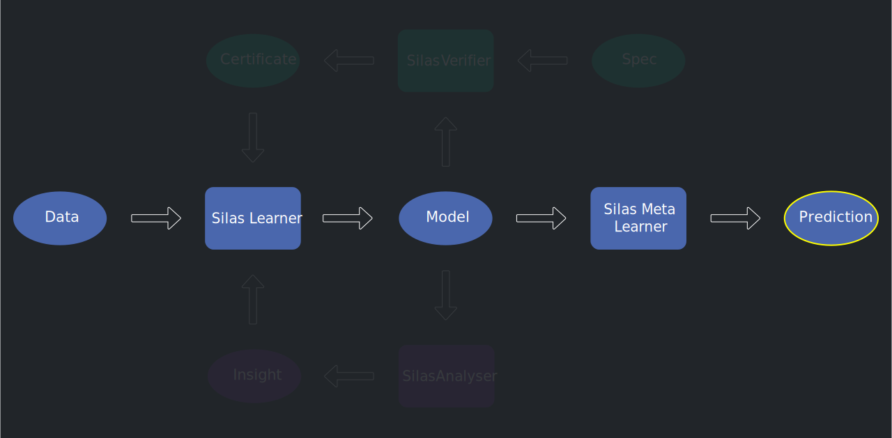
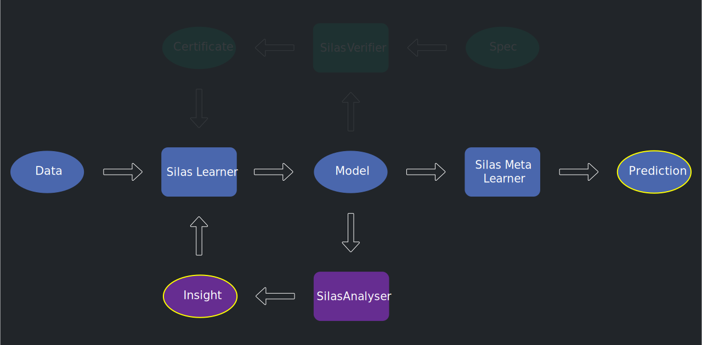
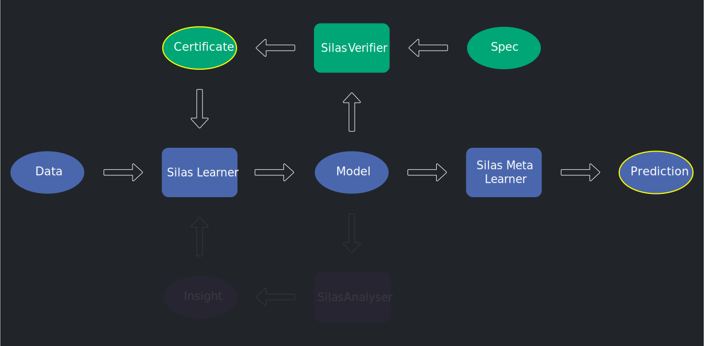
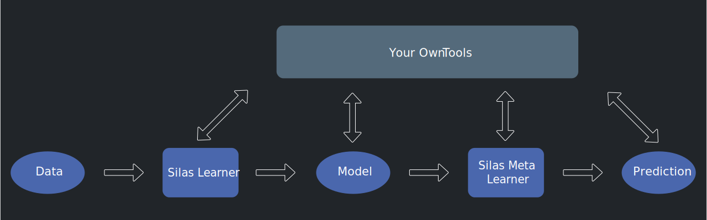

Silas is a generic data mining and predictive analytics software built upon advanced machine learning, automated reasoning, and artificial intelligence techniques. It can deal with any type of structured data and it can be used to perform tasks such as classification, regression, segmentation, anomaly detection, prediction, etc.
State of the art results
In large public and private dataset benchmarks, Silas often tops the other machine learning tools and libraries in classification and prediction results.
Silas uses decision trees to build up the semantics of models. This means that we are able to produce logical, meaningful, and interpretable models. Combined with automated reasoning techniques, Silas can perform Model Engineering to analyse the model and obtain valuable insights such as the core contributors to the classification and prediction results.
Silas is built in a compositional approach and design that fully utilise modern multi-core processors. The computation can also be distributed across resources such as high performance clusters and cloud infrastructures. Every line of code of Silas is scrutinised and optimised at CPU instruction and cache level. Silas runs 40% faster than similar tools when building models.
We profile the memory usage and ensure that every bit of memory is efficiently used and released in computation. As a result, Silas excels in anlaysing large volumes of data. With Silas, high performance clusters are no longer a necessity. A modern desktop is sufficient to analyse 10 million data instances. Silas can also swap rarely used resources to hard disk to further reduce memory usage.
One of the competitive advantages of Silas is that it is specifically fitted to its target application domain and execution environment at compile-time to offer low-level optimisations and greater performance.
Architecture

Perform prediction and classification using advanced machine learning techniques.

Analyse the prediction/classification model using automated reasoning, and obtain insights on how and why it works.

Verify that the model is compliant with user specifications, and reinforce certain requirements in classification and prediction.

Extend and use Silas within your own application domain.
{kind=link}
{kind=link}
{kind=link}